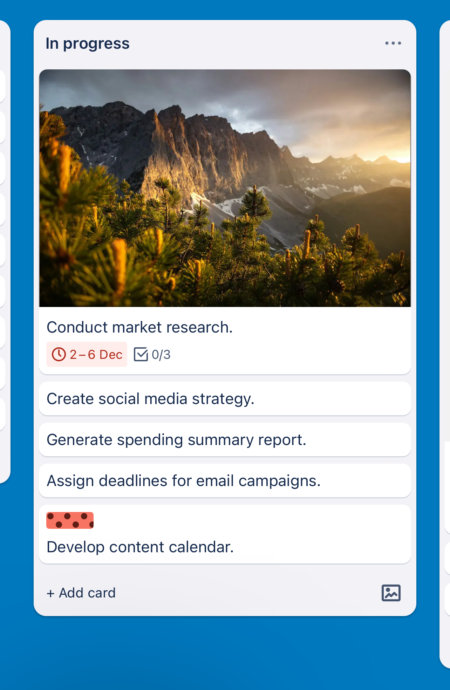
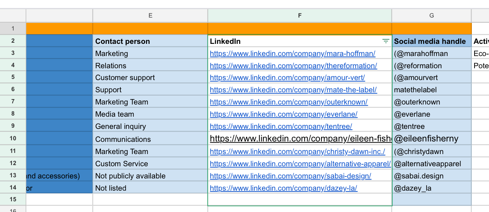
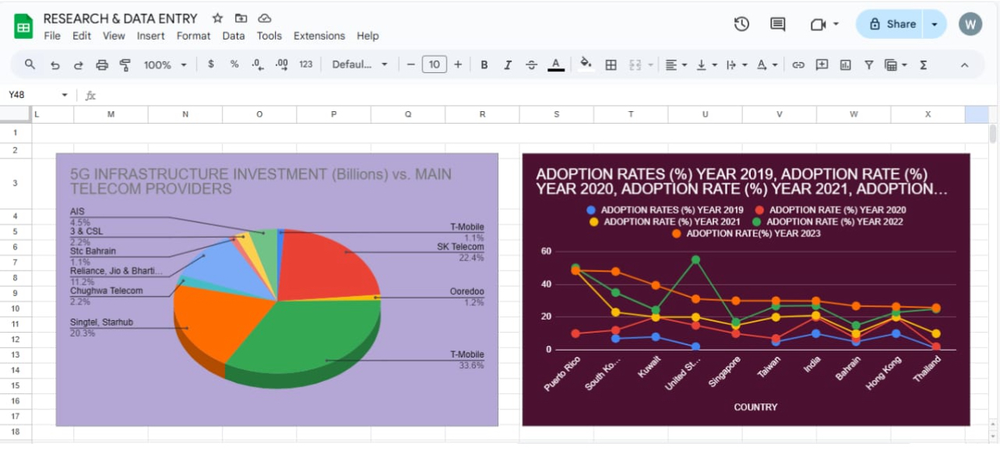
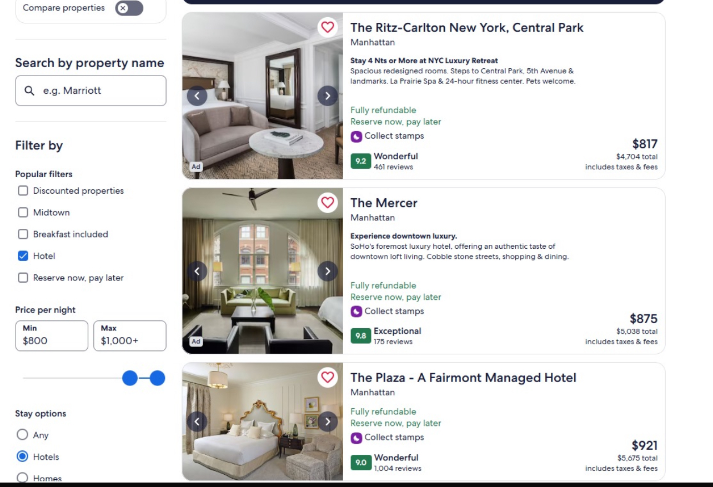

Administrative judgement
Prioritizing requests, preparing information, and communicating with care.
Executive · Operations · Technical Support
I’m Muhammad Musa, an Abuja-based support professional who helps senior executives and busy teams manage schedules, communication, documents, follow-ups, and day-to-day operations. I combine executive administration with digital tools and practical technical problem-solving.
Support workflow
A simple working method for turning leadership priorities into organized action.
Representative workflow — adapted to each executive, team, and operating process.
About
My work sits where executive support, operations coordination, and technical assistance meet. I help leaders protect their time, keep information organized, and maintain clear follow-through across people and tasks.
That can mean managing a calendar and meeting preparation, drafting correspondence, organizing digital records, updating a tracker, researching an issue, following up with a vendor, supporting a customer, or resolving a basic systems problem. I work comfortably with confidential information and understand when a matter needs independent action, clarification, or escalation.
Prioritizing requests, preparing information, and communicating with care.
Making owners, deadlines, dependencies, and next steps easy to see.
Learning tools quickly, checking details, and solving routine digital problems.
Integrated support
What I help with
Support can be adapted to an executive office, a remote team, an operations function, or a customer-facing environment.
Priority management, correspondence, briefings, research, confidential documents, and follow-up.
Scheduling, inbox support, agendas, meeting preparation, records, reminders, and action tracking.
Reports, presentations, proposals, templates, proofreading, briefing documents, and official records.
Task tracking, workflow notes, project support, vendor coordination, dashboards, and status updates.
Clear responses, inquiry handling, record updates, stakeholder follow-up, and service coordination.
Spreadsheet updates, data entry, quality checks, payment or expense logs, and digital filing.
Account checks, browser-based tools, routine troubleshooting, equipment records, and daily reporting.
Independent task management, shared files, written updates, handovers, and coordination across time zones.
Selected work samples
Calendar planning, meeting preparation, task coordination, research, and travel comparisons. Select a screenshot to explore the detail, or read the working methods below.
Representative portfolio samples. Calendar and task-board examples, a practice agenda, research records, and travel references. These show working formats rather than client case studies.
A colour-coded calendar and a time-boxed agenda show how priorities, recurring commitments, meeting leads, and discussion time can be made visible.
Representative calendar and meeting-agenda practice samples.

Preview · view full boardA task-board sample brings research, content planning, reporting, and deadlines into one visible work queue.
In-progress task-board sample, shown as captured.

View research logA structured spreadsheet keeps public company references, contact functions, and social profiles together, with missing information marked rather than guessed.
Public company references for research, not a client list.

View charting sampleA research-sheet example shows how spreadsheet data can be presented through chart types, category labels, and legends.
Charting exercise, not a validated market report. The figures are not personal performance results.

View hotel comparisonHotel-search examples show the details that inform a shortlist: location, price range, ratings, cancellation terms, and payment options.
Historical research references. Rates and availability are not current.
Daily operations cycle
Example sequence for organized remote or browser-based operations support.
Notes include context, owner, next action, and escalation status.
Experience
Roles are presented without unprovided dates or performance figures. Full employment details can be included in the CV.
HB Tronics Engineering Ltd
Support senior leadership with calendars, email, meetings, travel, documents, and day-to-day communication. Assist with administrative operations, onboarding, templates, digital filing, IT and infrastructure support, and confidential information.
Jannis Marketing
Provided email and scheduling support, client communication, proposals, reports, and general administration. Handled customer and vendor inquiries, maintained database and project records, supported social media tasks, and assisted with workflow automation.
Independent National Electoral Commission (INEC)
Supported the Resident Electoral Commissioner with appointments, travel, logistics, correspondence, schedules, official functions, filing, stakeholder communication, and expense tracking.
MUHAMS Enterprise Internet Cafe
Supported management with meetings, administrative tasks, travel, reports, presentations, and stakeholder communication. Followed up with vendors and project contacts, handled routine troubleshooting and systems support, and prepared technical documentation.
Education & learning
Training is described as training or ongoing learning and is not presented as an unverified professional certification.
Ahmadu Bello University, Zaria
Federal University of Agriculture, Makurdi
Skills & tools
I use familiar office and online tools and can learn comparable task-management, service, and operations platforms.
Tool ecosystem
My focus is not the software alone. It is using the right tool to keep people, priorities, records, and follow-up connected.
Featured strengths
I keep commitments visible, confirm next steps, and raise blockers early.
I handle sensitive information carefully and communicate on a need-to-know basis.
I check names, dates, documents, figures, instructions, and dependencies before work moves forward.
I write clear messages, records, reports, and updates for different audiences.
I give files, trackers, and working information a structure that others can understand.
I track what is pending, who owns it, and what needs to happen next.
Curriculum vitae
Download my CV for a detailed view of my background, responsibilities, education, and training.
Contact
I’m interested in executive, personal, administrative, operations, virtual, and technical support opportunities in Abuja or remote settings.
Email muhammad.musa4rl@gmail.com Phone +234 814 805 7035 LinkedIn linkedin.com/in/muhammad-musa-17082a42a/